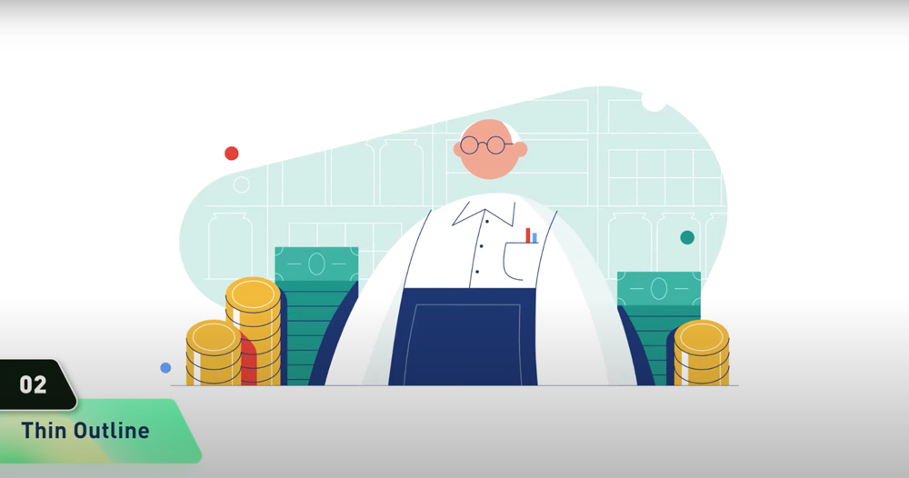
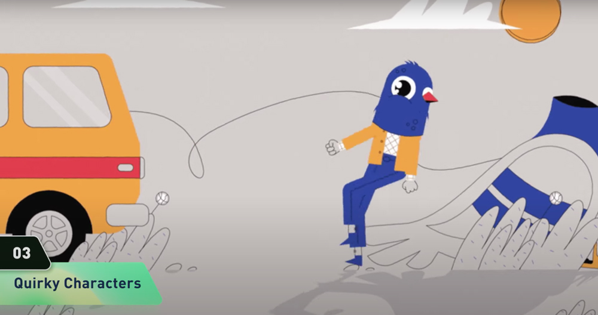
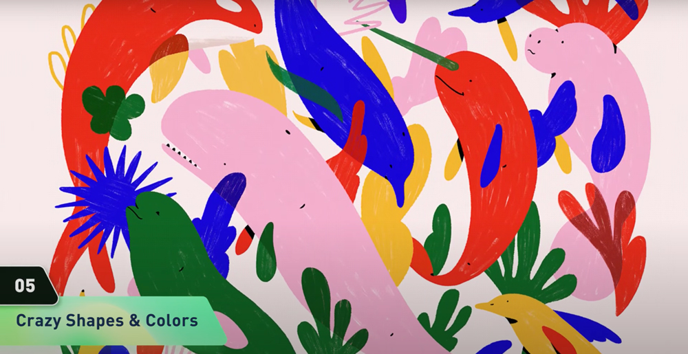
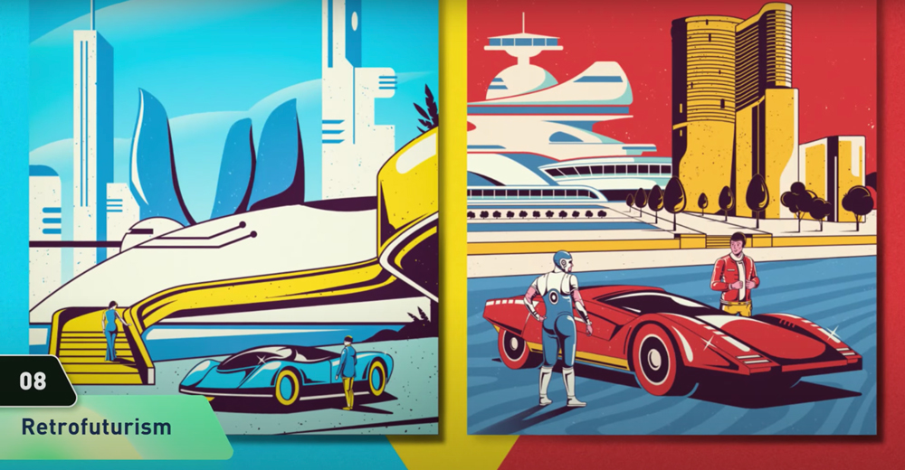

TODAY'S TOPIC
2021年のトレンドイラストレーション
YouTubeを見ていたら、2021年のイラストのトレンドを紹介してくれるページに出会いました。トレンドのイラストのテイストが8種紹介されていましたが、個人的に好きだったものを４つ紹介します。

img source -(https://www.youtube.com/watch?v=hkOP_DXGFSQ&feature=share)
まず一つ目は「細いラインを用いたイラスト」。これ、ウェブサイトなどでも良く見かけますよね。グーグルとかこういうイメージです。

img source -(https://www.youtube.com/watch?v=hkOP_DXGFSQ&feature=share)
2つめは「ちょっと奇妙さのあるイラスト」。キモカワってやつでしょうか。

img source -(https://www.youtube.com/watch?v=hkOP_DXGFSQ&feature=share)
3つめは「奇抜なカラーリング・シェイプのイラスト」。自由な表現がアーティスティックで好きです。子供の頃に読んだ絵本みたい。

img source -(https://www.youtube.com/watch?v=hkOP_DXGFSQ&feature=share)
3つめは「レトロフューチャーのイラスト」。現実にはない、見たことのない景色を描いているのになぜか懐かしい。。不思議な感じですね。
こちらのチャンネルでは、イラスト以外にもUIデザインやアニメーションなどのトレンドも紹介していたので、気になる方はぜひチェックしてみてくださいね!